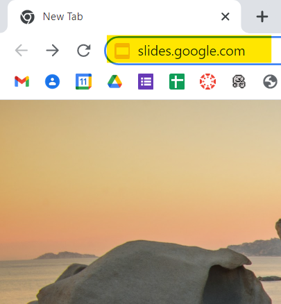
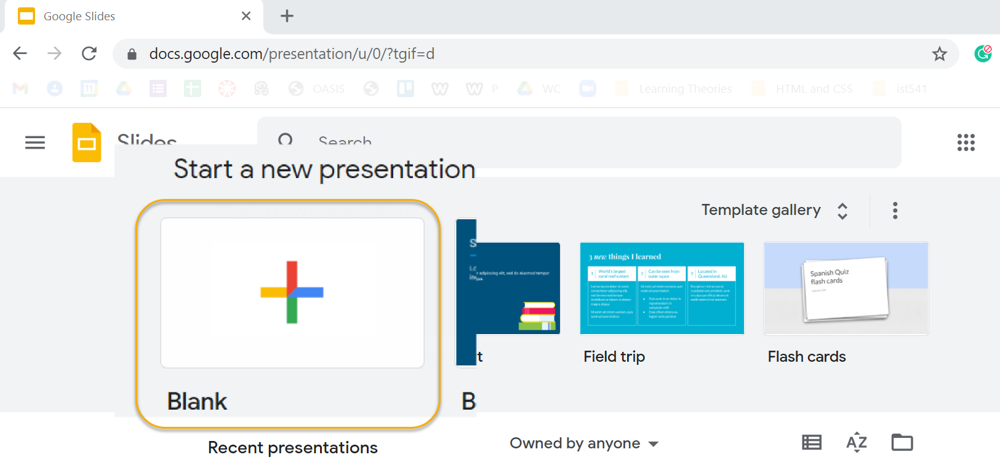
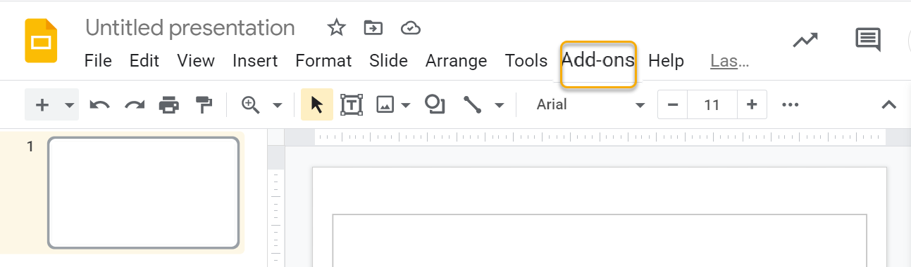
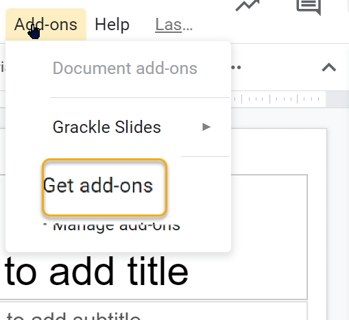
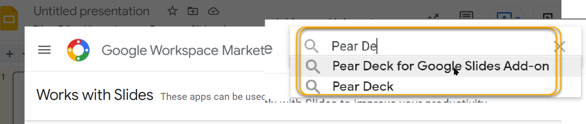
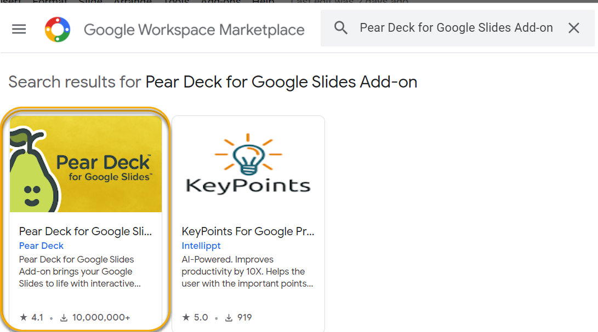
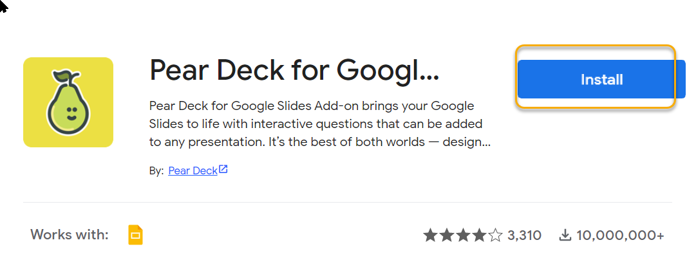

There are several ways to open Google Slides. The way shown here is to type slides.google.com in a browser search bar. Feel free to use any method youprefer to open a new Google Slides project.

Step 2: Start a New Presentation
Select a blank to open a new presentation. Alternatively, you can open an existing presentation to set up any add-on as well.

Step 3: Select the Add-ons menu
Find the Add-ons menu in the menu bar near the top of the screen. Select the Add-ons menu.

Step 4: Get Add-ons
After selecting the Add-ons menu, scroll down in the menu to Get Add-ons and select it.

Step 5: Search for Pear Deck
In the Google Workspace Marketplace, search for Pear Deck for Google Slides Add-on in the App search bar.

Step 6: Select Pear Deck Add-on
Choose the yellow tile titled Pear Deck for Google Slides

Step 7: Install Add-On
Select the blue Install button to begin installation of the add-on.

Step 7: Install Add-On
Select the blue Install button to begin installation of the add-on.